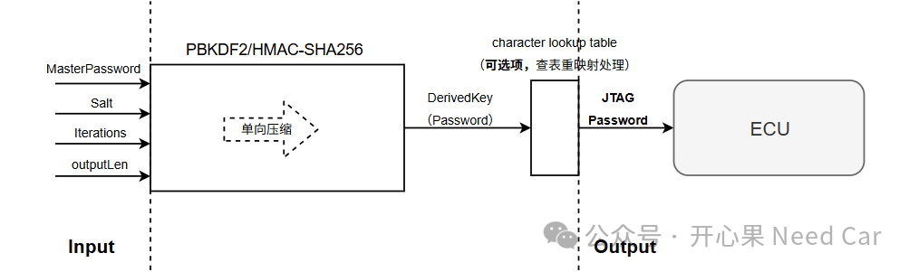
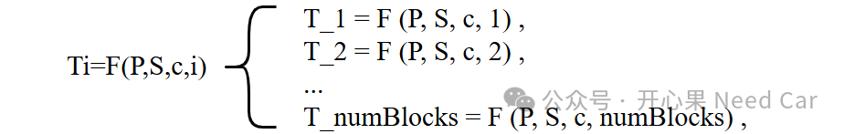
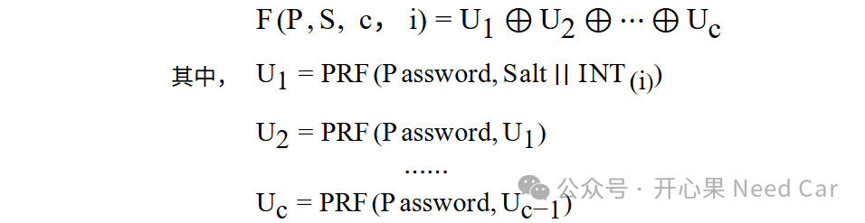

开心果 Need Car · 2026-01-30T06:21:00+08:00 · 微信原文
1.PBKDF2原理

注意：HMAC-SHA256只是PRF（pseudorandom function，伪随机函数）中的一种，可以根据项目需求选择不同的PRF。对于HMAC的理解，可以参考前文《信息安全，HMAC基础及性能测试》。
kdf = PBKDF2HMAC(algorithm=hashes.SHA256(),length=outlength, #output key lengthsalt=salt,iterations=10000)
2.计算步骤
(1)假设需要一个长度为dkLen的派生密钥（JTAG Password），而 PRF（HMAC-SHA256）输出长度是hLen（比如:32 字节）。
(2)计算需要多少块：
numBlocks=dkLen/hLen
(3)对每个块 i（从 1 到 numBlocks）：

迭代计算：

其中，INT(i) 是整数 i 的四字节（octet）编码，采用大端序（most significant octet first）。
拼接块，直到达到所需的dkLen，即：DK = T_1 || T_2 || ... || T_l<0..r-1>
往期精彩回顾